Proofread the transcript.
Use an LLM to catch transcription mistakes and clean up the words. The entire workflow can run on-device with a local model.

CAPTION CADENCESpeech-aware caption timing, proofreading, and animation. Caption Cadence takes captions from rough transcript to polished, naturally timed, word-by-word animation—in DaVinci Resolve Studio.
Join the waitlistA caption tool for editors who care about the spaces between the words.
Caption Cadence keeps going.
Use an LLM to catch transcription mistakes and clean up the words. The entire workflow can run on-device with a local model.
WhisperX listens for when each word was actually spoken, giving your captions timing that follows the performance—not a rough block of transcript.
Turn those word-level timings into captions that build, highlight, and move with the speaker directly in DaVinci Resolve.
Tools that solve the fiddly parts of caption work.
Correct names, phrases, and obvious transcript mistakes before they make it into your edit.
Word-level WhisperX timestamps make the captions follow real speech instead of guessing at it.
Add words as they’re spoken or highlight the current word for a caption style with actual rhythm.
Run the workflow on-device with WhisperX and a local LLM, or optionally connect your own Anthropic, OpenAI, or Gemini API key.
Compatibility details will be posted as testing wraps.
Join the list for launch news, early access, and founding-user pricing.
Questions worth answering before launch.
Caption Cadence currently requires DaVinci Resolve Studio. Exact version compatibility will be published before launch.
No single subscription is required. You can use local processing or connect your own API key from Anthropic, OpenAI, or Google Gemini. API usage is billed by those providers separately.
Soon. Join the waitlist and you’ll hear when early access opens.